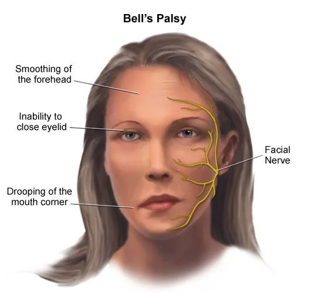
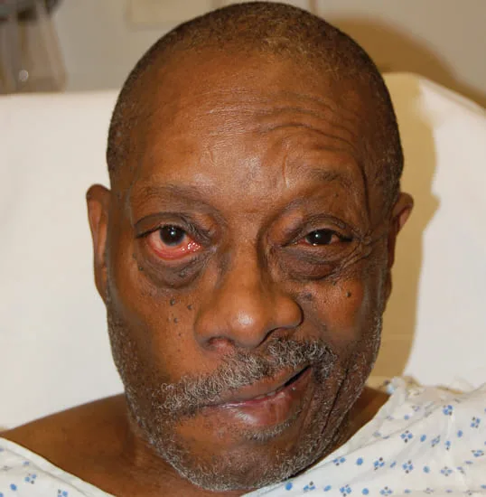
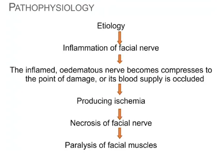
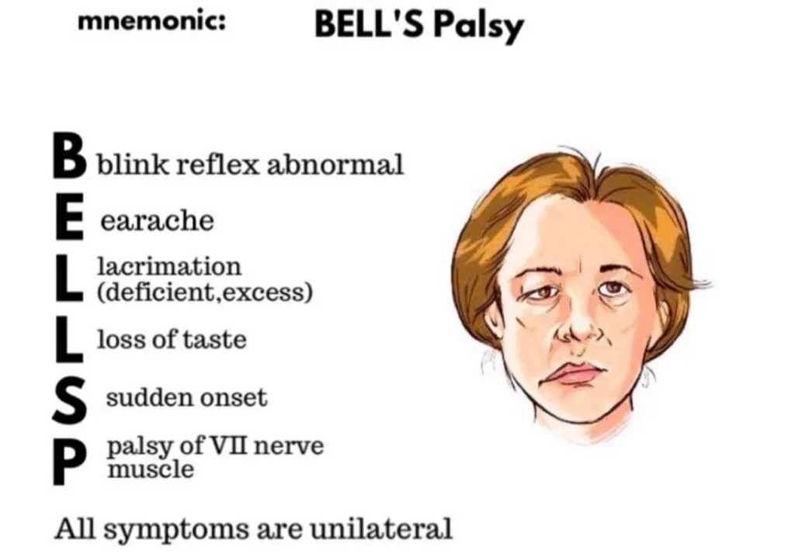
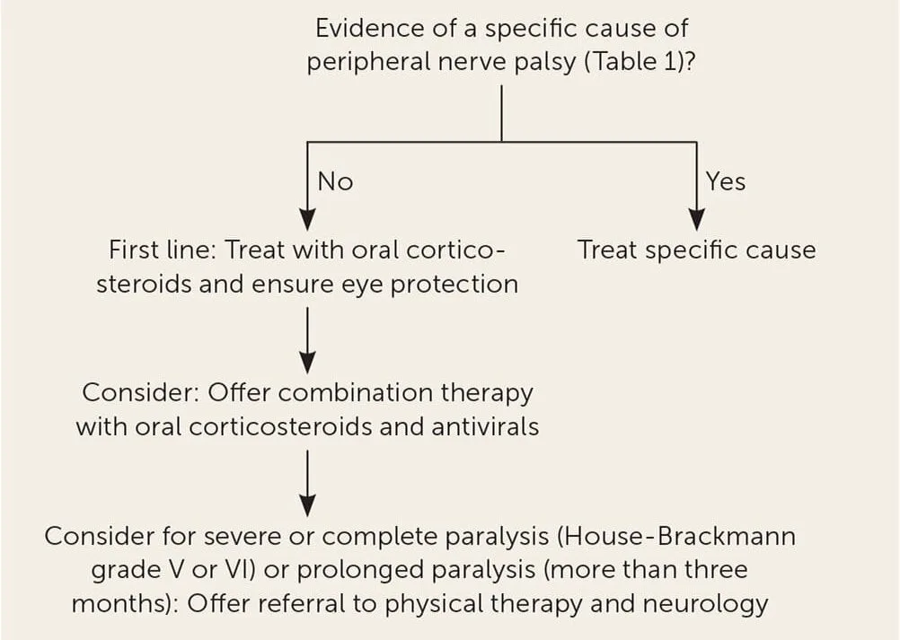

Expanded Nursing Uganda Explanation
Bell’s palsy should be understood beyond a short definition. Link the concept to patient history, focused assessment, common risks, nursing priorities, documentation and evaluation of outcomes.
Contents, 13 sections (tap to expand)
01 BELL’S PALSY (FACIAL NERVE PALSY)
Bell’s Palsy is a disorder characterized by disruption of the motor branch of the facial nerve (CN VII) or paralysis of one side of the face in absence of stroke.
Bell’s palsy is a type of facial paralysis that results in a temporary inability to control the facial muscles on the affected side of the face due to compression of the seventh cranial nerve.
The onset is mostly rapid and unilateral.
Sir Charles Bell , Scottish Surgeon, first described in early 1800’s based on trauma to facial nerves
02 Causes of Bell’s Palsy
The exact cause is unknown but can be triggered by bacterial or viral infections like :
- Herpes simplex, Herpes zoster and epstein barr virus.
- HIV
- Sarcoidosis, which is the growth of tiny collections of inflammatory cells in different parts of the body
- Lyme disease (bacterial infection caused by infected ticks)
It is also believed to occur due to localized inflammatory reactions of the facial nerve at the stylomastoid foramen.
- Demyelination of the nerve can trigger bell’s palsy.
03 Pathophysiology of Bell’s Palsy
The facial nerve has motor nerves that innervate/supply the muscles of expression on the face and sensory that supplies the tongue. Disruption of the nerve leads to rapid weakening or paralysis of the facial muscles on one side creating a mask-like appearance (angry face). Paralysis develops in 24-36 hours and the eye of the affected side tears constantly. The condition accompanies an outbreak of herpes vesicles around the ear.
- Etiology : The initial cause/factor is an inflammation of the facial nerve.
- Compression and Occlusion: The inflamed and swollen nerve gets compressed, potentially leading to damage or blockage of its blood supply.
- Ischemia : This compression results in reduced blood flow, causing ischemia (lack of oxygen and nutrients).
- Necrosis : The lack of blood supply leads to nerve tissue death (necrosis).
- Paralysis : The death of the facial nerve ultimately causes paralysis of the facial muscles.
04 Signs and symptoms of Bell’s palsy
- Facial Weakness : Drooping of the face and difficulty in performing facial expressions like smiling.
- Eye-related Issues : Inability to close the affected eye, leading to dry eyes, and the eye may fail to roll upward.
- Drooling and Speech Difficulties : Dribbling of saliva from the affected mouth angle, and speech difficulties due to muscle weakness.
- Challenges in Eating : Difficulty in closing the affected eye may result in food collecting between teeth and cheeks on the affected side.
- Whistling Difficulty : Inability to whistle due to muscle weakness on the affected side.
- Bell’s Sign : Failure of the eye to close and roll upward on the affected side.
- Mouth Deviation : Deviation of the mouth toward the normal side.
- Loss of Taste : Unilateral loss of taste sensation.
- Pre-paralysis Symptoms : Pain behind the ear before facial paralysis, accompanied by fever, tinnitus, or hearing difficulty.
- Muscle Twitches : Facial muscles may experience involuntary twitches.
- Dry Eyes and Mouth : Reduced tear and saliva production leading to dry eyes and mouth.
- Headaches : Individuals may experience headaches, possibly related to facial muscle tension.
- Sensitivity to Sound : Increased sensitivity to sound may be observed.
05 Diagnostic Evaluation of Bell’s Palsy
Diagnosis is often based on symptoms , ruling out other causes of paralysis like a stroke.
- No Definitive Test : No specific test confirms Bell’s Palsy; diagnosis relies on clinical evaluation.
- History of Onset of Symptoms : The patient’s experience, including the timing and progression of symptoms, is a key factor in diagnosing Bell’s palsy.
- Observation and Examination : Careful observation of the patient’s facial movements helps confirm the diagnosis. This includes assessing upper and lower facial weakness by observing actions like closing the eyes, lifting eyebrows, smiling, and frowning.
- Neurological Examination : A thorough neurological examination is conducted to assess the patient’s facial motor capacity. This involves testing the ability to perform facial movements, such as closing the eyes, lifting the eyebrows, smiling, and frowning.
- Blood Tests : Blood tests are needed only to rule out other conditions that might cause similar symptoms. These tests examine for viral infections or other risk factors known to be associated with Bell’s palsy.
- Electromyography (EMG) : This test measures the electrical activity of the facial muscles when stimulated. EMG helps to confirm the presence and severity of nerve damage. It also aids in differentiating Bell’s palsy from a stroke.
- Imaging Studies (CT or MRI) : Computed tomography (CT) or magnetic resonance imaging (MRI) are used to visualize the affected area and rule out any abnormalities or causes of pressure on the facial nerve. These studies are particularly helpful in excluding other potential causes, such as a brain tumor or a stroke.
06 Complications of Bell’s Palsy:
- Malnutrition : Difficulty in eating and drinking due to facial muscle weakness can lead to malnutrition.
- Psychological Withdrawal : Changes in facial appearance may cause psychological withdrawal and social challenges.
- Dehydration : Reduced ability to close the affected eye can lead to excessive tear evaporation, contributing to dehydration.
- Muscle Stretching and Facial Spasms : Prolonged muscle weakness may result in muscle stretching and facial spasms.
- Synkinesis : Involuntary contraction of certain muscles while attempting to move others, leading to uncoordinated facial movements.
- Excessive Dryness in Eyes : Inability to close the eye properly may cause excessive dryness, increasing the risk of eye infections and potential blindness .
- Mucous Membrane Trauma : Difficulty in maintaining normal oral and nasal moisture can lead to mucous membrane trauma.
- Corneal Abrasion: Insufficient eye protection may result in corneal abrasion, posing a risk to eye health.
- Facial Spasms and Contractures : Persistent facial spasms and contractures can impact facial muscle function and appearance.
- Changes in Appearance : Facial asymmetry and changes in appearance may contribute to psychological distress.
- Speech Difficulties : Impaired muscle coordination may lead to difficulties in articulation and speech.
- Chronic Eye Issues: Long-term complications may include chronic eye problems and discomfort.
07 Management of Bell’s Palsy
There is no specific treatment of the condition and hospitalization is not required;
Aims of management.
- Reduce Inflammation and Nerve Damage : This involves controlling the inflammation of the facial nerve, preventing further damage, and promoting nerve regeneration.
- Preserve Facial Function: The goal is to minimize the severity and duration of facial paralysis and to prevent permanent facial muscle weakness.
- Reduce Pain and Discomfort : Pain, especially in the ear or behind the ear, is common in Bell’s palsy. Pain management is important for the patient’s well-being.
MEDICAL MANAGEMENT
Medications :
1. Corticosteroids : The drugs of choice. Prednisone, a steroid medication, is often prescribed to reduce inflammation and swelling of the facial nerve.
- Prednisone may be started immediately!
- Best if initiated before paralysis is complete
- Taper off over 2 weeks( tapering is the process of stopping all opioids or reducing opioids quickly over a few days or weeks , decreasing the dose by 25% to 50% to 75% to 100%)
- Analgesics e.g. ibruprofen may be needed for pain
2. Antiviral Medications : Antiviral medications, such as Acyclovir (Zovirax) or famciclovir, because HSV is implicated in 70% of cases. They are sometimes prescribed, particularly if a viral infection is suspected.
3. Analgesics : Over-the-counter or prescription pain medications are used to manage pain and discomfort.
Facial Exercises : Facial exercises are an essential part of Bell’s palsy management, particularly after the initial inflammatory phase. These exercises aim to improve muscle strength and coordination, minimize muscle atrophy, and help regain facial function.
Examples of Conventional Exercises:
- Eye Exercises : Closing the eye tightly, blinking repeatedly, and gently massaging the eyelids.
- Brow Exercises : Raising the eyebrows, furrowing the brow, and moving the eyebrows from side to side.
- Mouth Exercises : Smiling broadly, pursing the lips, puffing out the cheeks, and blowing air out of the mouth.
- Chin Exercises : Moving the jaw side to side, clenching and unclenching the jaw.
- Facial Massage : Gently massaging the affected side of the face to improve circulation and muscle tone.
Other Therapies:
- Physical Therapy : A physical therapist can provide personalized facial exercise programs and teach techniques to improve facial muscle function.
- Occupational Therapy : Occupational therapists can help with activities of daily living, such as eating, grooming, and communication, and can recommend adaptive strategies for coping with facial weakness.
- Speech Therapy: Speech therapists can help address speech problems that may arise from facial paralysis, such as slurred speech or difficulty articulating words.
Surgery : Surgical intervention is rarely necessary for Bell’s palsy. In cases of persistent facial paralysis, nerve grafting or muscle transfers might be considered.
Physiotherapy :
- Facial Massage : Regular facial massage is crucial for maintaining circulation and keeping the skin supple.Massage should be performed in an upward direction, avoiding downward strokes that can stretch the paralyzed muscles and worsen the condition.
- Taping/Splinting : These methods help to reduce facial asymmetry by supporting the paralyzed side of the face and encouraging muscle balance. They can be customized by a physical therapist or occupational therapist.
- Muscle Re-education : Faradic Re-education : This technique uses electrical stimulation to re-educate the facial muscles. It is only suitable for patients who can tolerate sensory stimulation.
- Visual Feedback Exercises: Encouraging patients to perform facial exercises in front of a mirror allows them to observe their progress and improve their technique. This visual feedback can significantly aid in muscle re-education.
Conventional Exercises which include;
- Elevate eyebrows, after brushing the forehead.
- Elevate the corner of the lips (like saying “E”), after brushing the affected side of the face.
- Close eyes slowly and alternately close one eye at a time.
- Wrinkle and open the wings of the nose.
- Open the mouth and say “a”, “o”, and alternate between “e”, “a”, “o”.
- Smile with and without showing teeth.
- Wind up the cheeks with closed lips.
- Read and speak aloud.
Eye Care :
- It is essential to protect the eye on the affected side. The patient should be advised to wash their eyes regularly with saline solution and wear protective goggles or eye patches to prevent dust, debris, or foreign particles from entering the eye.
Alternative Medicine : There is limited scientific evidence to support the effectiveness of alternative medicine for Bell’s palsy, but some individuals may find relief from:
- Acupuncture : This involves inserting thin needles into specific points on the body, aiming to stimulate nerves and muscles.
- Pain Relief: Apply a warm, moist sponge to alleviate pain.
- Eye Care: Pad the dry eye to prevent excessive dryness and potential complications.
- Nutrition : Monitor and support the patient’s nutrition, addressing challenges in eating and drinking.
- Physiotherapy and Facial Massage : Implement physiotherapy and facial massage to stimulate facial muscles.
- Speech Therapy : Provide speech therapy to address potential speech difficulties.
- Support Groups : Encourage the patient to join support groups for emotional well-being.
- Facial Symmetry : Utilize a face strap to help symmetrize the lips.
- Eye Protection : Advise the patient to stay in warm environments, avoid dust and wind, and use eye protection in dangerous exposures.
- Swallowing Precautions : Instruct the patient to sit upright while eating, chew on the non-paralyzed side, consume small portions, and maintain a balanced nutrition intake to prevent complications in swallowing.
- Privacy during Meals: Respect the patient’s privacy during mealtime to avoid embarrassment.
- Mouth Care : Perform careful mouth care, as food may accumulate between the lip and gingiva.
- Muscle Tonus Maintenance : Massage the patient’s face with upward strokes for 5-10 minutes to maintain muscle tone, and encourage self-massage.
- Active Exercise : If ready, ask the patient to perform active exercises, such as smiling in front of a mirror.
- Eye Protection Outside : Suggest using eye protectors, especially when going outdoors. Sterile eyes
08 NURSING CARE PLAN FOR A PATIENT WITH BELL’S PALSY
- Assessment Nursing Diagnosis Goals/Expected Outcomes Interventions Rationale Evaluation
- Facial asymmetry with drooping on one side, difficulty in closing the eye, and drooling from the mouth. Post trauma syndrome related to inflammation of the facial nerve as evidenced by inability to close the eye and drooping of the mouth on one side. Improve facial muscle strength and function, evidenced by the ability to close the eye and reduced drooling within 2 weeks. – Teach facial exercises to stimulate muscle function. – Administer prescribed corticosteroids to reduce inflammation and swelling. – Encourage the use of assistive devices like eye patches to protect the eye. – Facial exercises can help stimulate the muscles and improve function. – Corticosteroids reduce inflammation, which can relieve nerve compression. – Eye protection prevents corneal damage due to dryness. Patient demonstrates improved ability to close the eye and reduced drooping, indicating improved muscle strength and function.
- Patient reports difficulty swallowing and frequently chokes on liquids. Impaired swallowing related to weakness of facial muscles as evidenced by frequent choking and difficulty swallowing. Prevent aspiration and improve swallowing ability, evidenced by the ability to swallow liquids without choking. – Instruct the patient on swallowing techniques, such as chin-tuck during swallowing. – Offer thickened liquids to reduce the risk of aspiration. – Position the patient upright during meals and for 30 minutes afterward. Proper swallowing techniques and thickened liquids can reduce the risk of aspiration. – Upright positioning helps gravity assist in swallowing and reduces aspiration risk. Patient swallows liquids without choking, indicating improved swallowing ability.
- Patient reports difficulty in articulating words clearly and being understood by others. Impaired verbal communication related to facial muscle paralysis as evidenced by difficulty articulating words. Enhance communication ability, evidenced by the patient being understood by others. – Provide alternative communication methods, such as writing or using communication boards. – Encourage the patient to speak slowly and clearly. – Refer to speech therapy if needed. Alternative communication methods reduce frustration and improve understanding. – Speech therapy can help retrain muscles and improve articulation. Patient is able to communicate effectively using alternative methods or improved speech clarity.
- Patient complains of a dry and irritated eye. Ineffective Dry eye self-management related to incomplete eyelid closure as evidenced by patient complaints of dryness and irritation. Prevent corneal damage and reduce discomfort, evidenced by the patient reporting no eye irritation and maintaining eye moisture. – Administer artificial tears or lubricating eye drops as prescribed. – Apply an eye patch during sleep to protect the eye. – Teach the patient to manually close the eyelid periodically. Lubricating eye drops prevent dryness and irritation. An eye patch protects the cornea during sleep, reducing the risk of damage. Patient reports no eye irritation and maintains eye moisture, indicating effective prevention of corneal damage.
- Patient’s affected side of the face is sensitive, and they report discomfort. Acute pain related to facial nerve inflammation as evidenced by patient complaints of pain on the affected side. Reduce pain and discomfort, evidenced by the patient reporting a decrease in facial pain. – Administer prescribed analgesics to manage pain. – Apply warm compresses to the affected area to alleviate discomfort. – Educate the patient on gentle facial massage techniques. Analgesics relieve pain, warm compresses reduce discomfort, and facial massage can help stimulate circulation and reduce pain. Patient reports reduced pain and discomfort, indicating effective pain management.
- Patient expresses anxiety and emotional distress about their appearance and the sudden onset of facial paralysis. Excessive Anxiety related to the sudden onset of facial paralysis as evidenced by patient verbalizing concerns about appearance, and presenting with emotional distress. Reduce anxiety and improve emotional well-being, evidenced by the patient reporting reduced distress and improved coping. – Provide emotional support and reassurance about the potential for recovery. – Encourage the patient to express feelings and concerns. – Refer to counseling or support groups if needed. Emotional support and reassurance can help reduce anxiety. – Counseling or support groups provide a space for the patient to process emotions and learn coping strategies. Patient reports reduced anxiety and improved emotional well-being, indicating effective emotional support.
NANDA 2024-26
09 Nursing Concerns for Bell’s Palsy
- Risk for Aspiration : Facial weakness can affect swallowing, increasing the risk of aspiration.
- Risk for Corneal Abrasion : The inability to close the eye completely can lead to corneal dryness and damage.
- Impaired Communication : Facial weakness can make it difficult for the patient to speak clearly.
- Disrupted Body Image : The facial paralysis can have a significant impact on the patient’s self-esteem.
- Risk for Infection : The affected eye is more susceptible to infection due to dryness and decreased blinking.
- Risk for Delayed Recovery : The patient may experience anxiety and frustration due to the slow recovery process.
- Risk for Social Isolation : The facial paralysis can make the patient feel self-conscious and withdraw from social interactions.
10 Nursing Uganda Clinical Lens
Use Bell’s palsy as a practical nursing topic, not only a memorized definition. Start with normal structure and function, then connect it to assessment findings and disease.
- What to understand first: define bell’s palsy, identify the normal or expected pattern, then explain what changes when the patient is unwell.
- Why it matters in care: the nurse must recognize risk early, explain findings clearly, document accurately and know when to escalate.
- How to revise it: connect each point to assessment, nursing diagnosis or care problem, intervention, rationale and evaluation.
11 Assessment Guide
- Relevant inspection, palpation, movement, auscultation, vital signs or neurological checks.
- Normal findings, abnormal findings and what each abnormality may indicate.
- Patient history, risk factors and how the body system affects other systems.
12 Nursing Priorities, Rationales and Outcomes
- Use anatomy to explain symptoms and guide focused assessment.
- Recognize findings that need urgent escalation.
- Teach the patient using simple body-system language.
The rationale for these priorities is patient safety: nursing actions should prevent deterioration, reduce discomfort, support recovery and create clear evidence for the next caregiver.
- Expected outcome: The learner can explain normal function, identify abnormal signs and connect them to nursing action.
13 Patient Teaching and Revision Check
- Explain bell’s palsy in simple language the patient or caregiver can repeat back.
- Teach warning signs, medicine or follow-up instructions, hygiene or lifestyle points where relevant.
- For exams, prepare a short answer using: definition, causes or risk factors, signs, assessment, management, complications and prevention.
- For ward practice, document baseline findings, actions taken, patient response and the plan for review.
Illustrations and Diagrams (17)







9 more diagrams available, open the lesson for full illustrations.
Related Video Lectures
Watch nursing lecture videos on YouTube for this topic. Opens in a new tab.
Watch on YouTubeExternal link: YouTube may use its own cookies and terms. Nursing Uganda is not affiliated with YouTube.